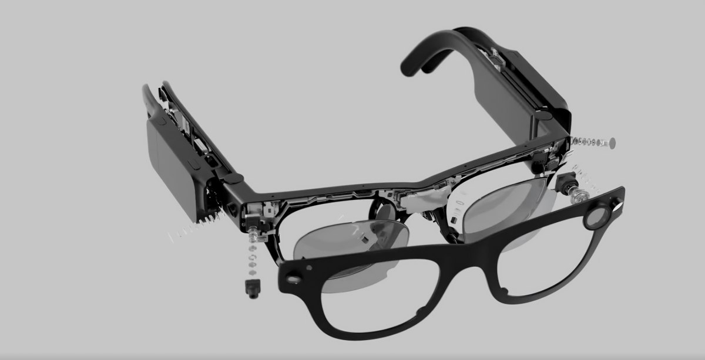

автор Kai Nicol-Schwarz
ElevenLabs выпускает новую модель ИИ, которая, по её утверждению, превосходит конкурентов из Google и OpenAI.
sifted.eu
27 февараля 2025 год
Carl Franzen
Новая модель распознавания речи в текст Scribe от ElevenLabs уже здесь с самой высокой точностью на данный момент
venturebeat.com
February 26, 2025

Paul Sawers
Continue wants to help developers create and share custom AI coding assistants
techcrunch.com
February 26, 2025
Kyle Wiggers
Taktile помогает финтех-компаниям создавать автоматизированные процессы принятия решений.
techcrunch.com
February 27, 2025

Mike Butcher
Archipelo comes out of stealth with $12M funding to secure human and AI-driven code
techcrunch.com
February 27, 2025

Carl Franzen
Qodo’s open code embedding model sets new enterprise standard, beating OpenAI, Salesforce
venturebeat.com
February 27, 2025
atomic-energy
Американский стартап Last Energy построит 30 микрореакторов PWR-20 для центров обработки данных Техаса
atomic-energy.ru
28 февраля 2025 год

Kyle Wiggers
Новые AR-очки Meta для исследований могут измерять частоту сердечных сокращений.
techcrunch.com
February 27, 2025
Автор - Samantha Subin
Obvious Ventures, сооснованный Эваном Уильямсом из Twitter, планирует привлечь фонд в $400 миллионов.
cnbc.com
26 февраля 2025 год
Chris Metinko
Стартап в сфере систем безопасности Verkada достиг оценки в $4,5 млрд после раунда финансирования серии E.
crunchbase.com
19 февраля 2025 года
Kyle Wiggers
Taktile помогает финтех-компаниям создавать автоматизированные процессы принятия решений.
techcrunch
February 27, 2025
Chris Metinko
Биотехнологический стартап Eikon Therapeutics привлек колоссальные $351 млн в раунде финансирования серии D.
crunchbase.com
February 27, 2025
Daniel Levi
ИИ-стартап Bridgetown Research привлек $19 млн для масштабирования аналитики рынка на основе искусственного интеллекта.
techstartups.com
26 февраля 2025
Julie Bort
Как автомобильный топ-менеджер Кристал Браун основала CircNova — биотехнологический стартап по разработке лекарств с использованием ИИ.
techcrunch
February 21, 2025
.png)
Канадский AI-стартап Cohere утроил доходы и оценивается в $5,5 млрд.
borgexpert.com
28 февраля 2025 год
Rebecca Szkutak
DocUnlock хочет решить проблему узких мест в таможенных процессах.
techcrunch.com
February 25, 2025
Guest Author
The X Verified Org Startup Game Plan (Or How To Make Your Brand Go Viral)
crunchbase.com
February 24, 2025
Daniel Levi
Quantum Machines привлекла $170 млн для продвижения следующего скачка в квантовых вычислениях.
techstartups.com
26 февраля 2025